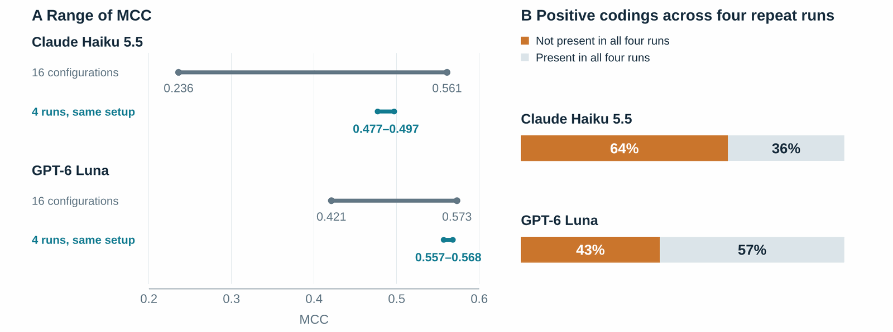
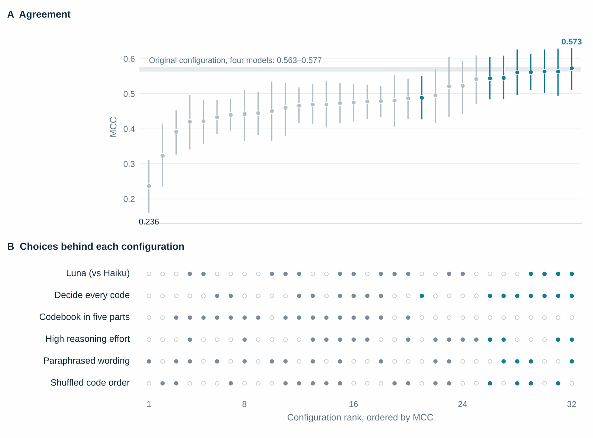
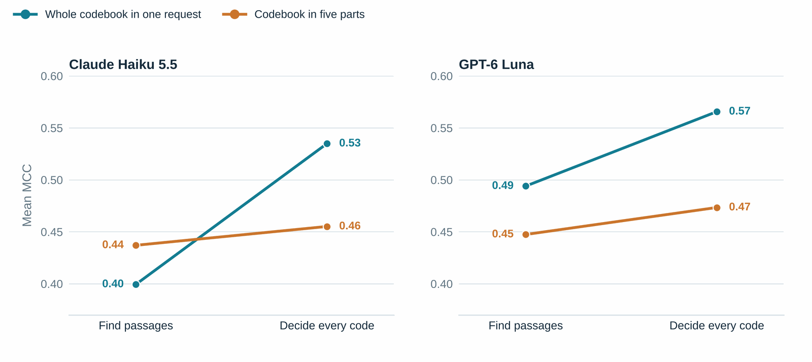
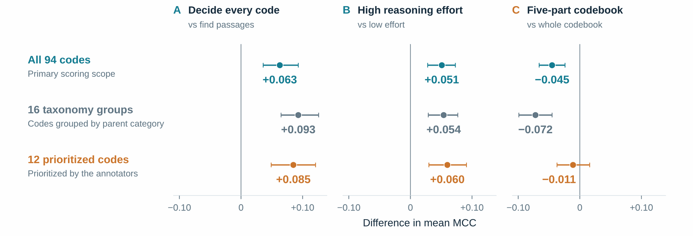
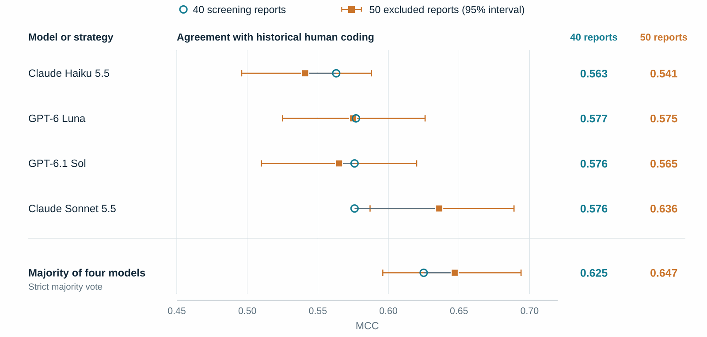
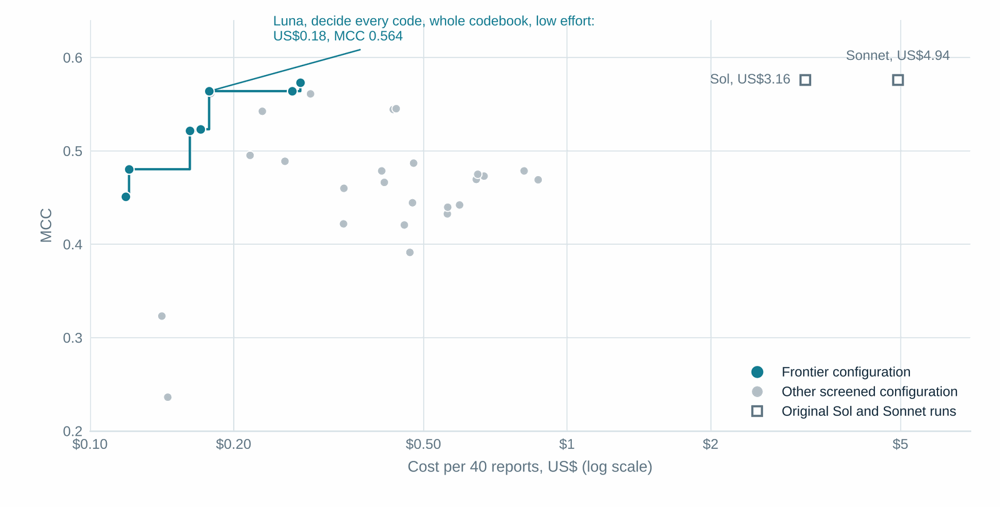
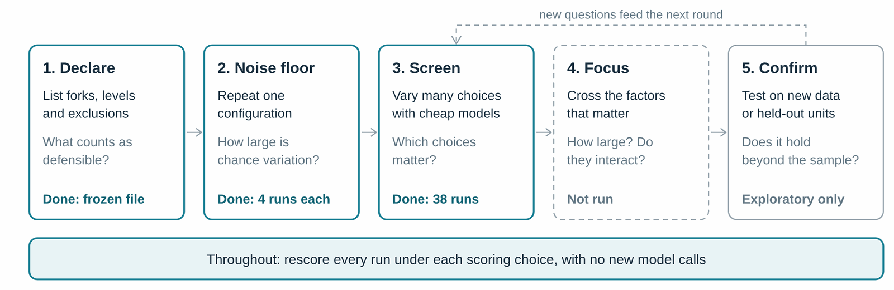

Preprint write-up · October 2026
The analytic multiverse of AI-assisted qualitative coding
Every AI coding result is one path through many defensible choices. A screening study of 32 configurations shows which choices mattered, how they interacted, and why one configuration answers a narrower question than it appears to.
The preprint is in moderation at PsyArXiv; a direct link will be added here once it is posted.
Why this matters
Large language models (LLMs) can now apply a qualitative codebook to interviews and documents far faster than a human team, and a growing literature reports how well they do so. However, most of these studies report one configuration (i.e., one set of choices used to produce and score the codes) and its agreement with human coding. A configuration is a stack of decisions: how documents are divided, how the codebook is presented, how the task is worded, which model and settings are used, and how agreement is counted. Few of these decisions have a single correct answer, and most are made once and left untested.
Psychology met a similar problem in the ‘garden of forking paths’, where flexible analytic choices can produce almost any result. Its answer was multiverse analysis: run every defensible analysis and report the spread. In the preprint, I adapt that idea to AI-assisted directed content analysis, the deductive form of qualitative coding in which codes are defined in advance from a framework or theory.

The study
To see which choices matter, I ran a screening study on a public dataset. The Human Behaviour-Change Project released smoking-cessation trial reports annotated with 94 behaviour change techniques. Two low-cost models, Claude Haiku 5.5 and GPT-6 Luna, coded 40 of those reports under a half-fraction factorial design that varied five choices at once: the task instructions (‘find passages’ or ‘decide every code’), whether the codebook was sent whole or in five parts, reasoning effort, a paraphrase of the instructions, and the order of the codes. One configuration per model was run four times to measure chance variation. Agreement with the human annotations was measured with the Matthews correlation coefficient (MCC), where 0 means chance agreement and 1 perfect agreement. The whole screen, 38 runs and 4,080 requests, cost US$13.66 in recorded API spend.
The runs used two open-source tools I built for this work. QualFrame, a research prototype, applies a codebook through a model provider's API and records every choice as a setting. QualBench scores the outputs against a reference, so the same outputs can be rescored under any scoring choice without new model calls.
What I found
01Stable scores can hide unstable coding
Four runs of the same configuration agreed with the human coding almost identically; MCC varied by 0.02 or less. However, the decisions beneath those scores were far less stable. Of the codes that at least one run applied, 64% for Haiku and 43% for Luna were not applied by all four runs. Said another way, two runs can reach the same score while disagreeing about which codes apply. Where individual codings are reviewed and used as evidence, that instability matters more than the stability of the summary.

02Setup choices mattered more than the model
Across the 32 configurations, MCC ranged from 0.24 to 0.57, a spread about ten times the variation between repeat runs. The contrasts for task instructions, reasoning effort, and codebook division were each larger than the average difference between the two models. The seven best configurations all combined the ‘decide every code’ instructions with the whole codebook in one request.

03The choices interacted
Asking the model to decide on every code raised MCC by 0.10 when the whole codebook was sent at once, but by only 0.02 when it was divided into five parts. High reasoning effort helped mainly when the model was asked only to find passages, and mainly for Haiku. A statement about the effect of any one choice is therefore conditional on the others, and a comparison of models at one fixed configuration answers a narrower question than it appears to.

04The reference shapes the answer
The human annotations were made under their own rules: the annotators skipped Discussion sections and coded only techniques aimed at the target behaviour, while the models read whole reports. Configurations that coded more were therefore penalized partly for codings outside the reference's coverage, not only for errors. For example, the apparent cost of dividing the codebook was −0.045 over all 94 codes but only −0.011 over the 12 codes the annotators prioritized. Some of the variation in agreement is variation in alignment with one particular reference, which agreement statistics alone cannot distinguish from error.

05Model rankings did not travel
Four models that had nearly identical agreement on the 40 screening reports (0.563 to 0.577) diverged on 50 reports that were not used in screening, where Claude Sonnet 5.5 rose to 0.636 while the others stayed between 0.541 and 0.575. Nonetheless, a simple majority vote across the four models had agreement similar to the best of them (0.647), without anyone needing to know in advance which model was best, although it costs as much as all four runs together. This analysis was exploratory.

06Near-best agreement was cheap
Every configuration on the cost–agreement frontier was a Luna run. Luna with ‘decide every code’, the whole codebook, and low effort reached MCC 0.564 for US$0.18 per 40 reports, within 0.01 of the best screened configuration. Earlier runs with larger models reached 0.576 on the same reports at about 18 and 28 times that cost.

What this means for practice
For teams using AI-assisted coding, the results suggest four practices.
- Report prompts, model identifiers, settings, task scope, and scoring rules in full, and run sensitivity analyses on the choices with the largest contrasts here: task instructions, codebook presentation, and reasoning effort. Provider defaults are choices too.
- Repeat at least one configuration, and report agreement between repeats at the level of individual codes, not only the summary score.
- Where the reference's scope differs from the coding task, also report results for a scope that matches the reference.
- Choose the agreement statistic in advance, and choose a configuration or model on some documents and confirm it on others.
An open research agenda
One dataset cannot establish which choices matter in general; that requires evidence from many datasets, frameworks, and kinds of text. Progress does not require a coordinated project, only studies that can be compared. The questions I consider most pressing are:
- Which choices account for most of the variation in agreement, and does their ordering hold across datasets and frameworks?
- Do model rankings survive changes to instructions, codebook presentation, scoring, and the documents scored?
- Which properties of a code (e.g., its prevalence, abstraction, and overlap with other codes) predict whether its agreement is robust?
- Do conclusions drawn from agreement hold when the quality of coding is judged directly?
Running a comparable study
If you are evaluating AI-assisted coding against existing human coding, you can declare your multiverse before running it, include the choices with the largest contrasts here, repeat at least one configuration, and report six quantities: the noise floor, the specification curve, the variance decomposition, the cost–agreement frontier, code-level robustness, and rank stability. QualFrame, QualBench, and the declaration and analysis scripts from this study are openly available and can be adapted to other data. Studies reported this way can later be combined across datasets and frameworks.

Before AI-assisted coding can be relied on as a research instrument, we must establish how much its results depend on the choices made in configuring it.
Limitations
Agreement is not validity, and here the reference and the coding task differed in scope. The screen used one dataset of published English-language trial reports and two low-cost models, the half-fraction design cannot separate two-way interactions from three-way interactions, and the analyses of combining runs and of excluded reports were added after the screen. The specific estimates are best read as hypothesis generating; the aim is to learn which kinds of choice matter, which should outlast any one model.
Read the full study
van Allen, Z. (2026). The analytic multiverse of AI-assisted directed content analysis: a framework, open tools, and a screening study [Preprint]. PsyArXiv.
Code, materials, and derived data: doi.org/10.17605/OSF.IO/9287H
QualFrame and QualBench: github.com/ZvanAllen/qualframe